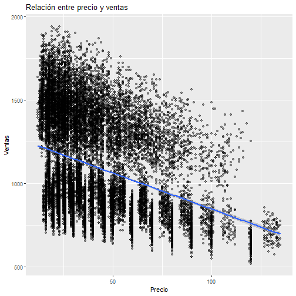
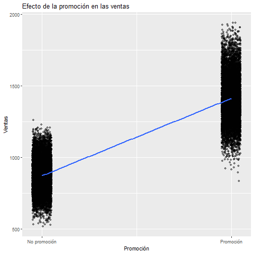
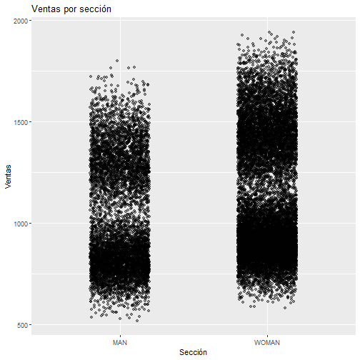
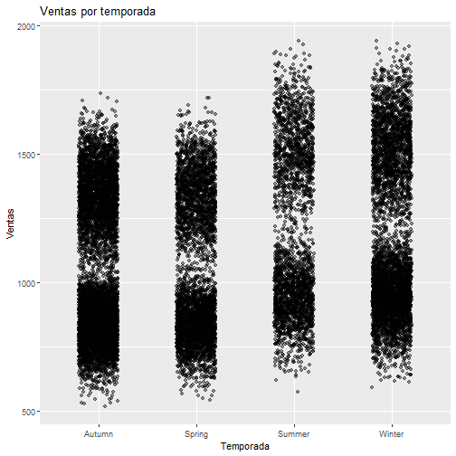

Regresión lineal simple multivariable aplicada al negocio
En esta fase se construye un modelo de regresión lineal para cuantificar el impacto del precio, la promoción, la sección y la temporada sobre el volumen de ventas del catálogo Zara.
Resumen de la fase
Análisis de Regresión Lineal
Evaluación del impacto de variables comerciales sobre el volumen de ventas.
Preguntas que se pueden responder con un modelo de regresión
Planteamiento del problema
A partir del dataset Zara_sales.csv, un modelo de regresión permite responder preguntas como:
Estas preguntas son adecuadas para regresión porque la variable objetivo es numérica continua.
Definición del problema y relación conceptual
Variables del modelo
Análisis bivariado
Ventas frente a cada variable
Relación entre precio y ventas
Regresión lineal simple

El gráfico muestra la relación entre el precio del producto y el volumen de ventas, junto con una línea de regresión que resume la tendencia general del comportamiento. La pendiente negativa de la línea indica que, en promedio, a medida que aumenta el precio, las ventas tienden a disminuir.
La dispersión de los puntos alrededor de la línea refleja que, aunque el precio es un factor importante, no determina por sí solo el éxito comercial del producto. Existen productos con precios elevados que logran buenas ventas, lo que apunta a la influencia de otros factores como el diseño, la moda o la percepción de calidad.
Interpretación de negocio: el precio actúa como un freno natural a la demanda. Subidas de precio deben estar respaldadas por un mayor valor percibido para no penalizar el volumen de ventas.
Impacto de la promoción en las ventas
Regresión lineal simple

El gráfico compara el volumen de ventas de los productos promocionados frente a los no promocionados, incorporando una línea de regresión que resume la diferencia media entre ambos grupos.
La pendiente positiva de la línea indica que los productos en promoción, en promedio, alcanzan mayores niveles de ventas. Sin embargo, la dispersión muestra que el efecto no es uniforme: algunos productos reaccionan mejor que otros a las promociones.
Interpretación de negocio: las promociones incrementan la probabilidad de vender más unidades, pero deben aplicarse de forma estratégica, priorizando productos con alto potencial de respuesta.
Ventas por sección
Regresión lineal simple

Este gráfico analiza el comportamiento de las ventas según la sección del catálogo. La línea de regresión refleja diferencias estructurales en el volumen medio de ventas entre secciones.
Algunas secciones muestran un mayor nivel de ventas esperado, lo que sugiere una mejor alineación entre oferta y demanda para determinados públicos.
Interpretación de negocio: cada sección responde a dinámicas distintas, por lo que aplicar una estrategia comercial homogénea puede generar ineficiencias.
Nota : en los gráficos correspondientes a Sección y Temporada, la línea de regresión no se muestra inicialmente porque estas variables son categóricas y no numéricas. Al tratarse de factores, el modelo de regresión no puede ajustar una recta continua sobre el eje horizontal, ya que no existe una escala numérica natural entre las categorías.
Ventas por temporada
Regresión lineal simple

El gráfico muestra cómo varían las ventas a lo largo de las distintas temporadas, destacando patrones estacionales en el comportamiento del cliente.
La línea de regresión permite identificar temporadas con un rendimiento medio superior, lo que tiene implicaciones directas en la planificación comercial.
Interpretación de negocio: ajustar lanzamientos, stock y promociones según la temporada puede mejorar significativamente los resultados de ventas.
Nota : en los gráficos correspondientes a Sección y Temporada, la línea de regresión no se muestra inicialmente porque estas variables son categóricas y no numéricas. Al tratarse de factores, el modelo de regresión no puede ajustar una recta continua sobre el eje horizontal, ya que no existe una escala numérica natural entre las categorías.
Conclusión del análisis de regresiones simples
Visión individual de cada factor
Los gráficos de regresión lineal simple confirman visualmente que cada variable tiene un impacto individual sobre las ventas.
No obstante, la dispersión observada en todos los casos indica que las decisiones de compra dependen de múltiples factores que actúan simultáneamente.
Conclusión de negocio: estos análisis justifican la necesidad de un modelo multivariable que permita evaluar el impacto conjunto de todos los factores.
Formulación del modelo
Transformaciones necesarias
Conclusiones del análisis
Lectura orientada al negocio
Este análisis proporciona una base cuantitativa para optimizar precios, diseñar campañas y priorizar productos.